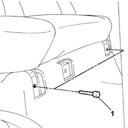
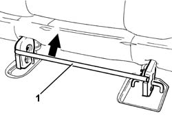
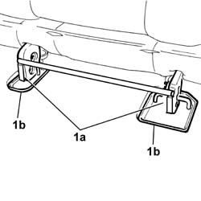

7050A10 rear seat - r+r
- Path
- Procedures > 70 FITTINGS > 7050 REAR SEATS > 7050A rear seat assembly > 7050A10 rear seat - r+r
- Kind
- repair procedure (removal / refitting; the operation number is the code)
- Applies to
- all engines; all production periods
- Interactive page
- https://sloeber94.github.io/elrnDB-fDbl/en/#/2585192
Applies to: all engines; all production periods; only with equipment: Doblò trim level
 Removing
Removing
 Refitting
Refitting1. Undo the front bolts fixing the seat to the bodyshell.

Applies to: all engines; all production periods; only with equipment: Doblò trim level
Lower the rear seat backrest.
1. Use the lever to remove the seat.

Applies to: all engines; all production periods; only with equipment: Doblò trim level
Refitting
Removing1. Position the rear seat, securing the rear devices (1a) to the supports (1b) on the floor.

Applies to: all engines; all production periods; only with equipment: Doblò trim level
Tighten the front bolts fixing it to the floor to torque.
 | Fastening | Component | Ø | Value (daNm) |
|---|---|---|---|---|
- | Bolt | FRONT SEAT ASSEMBLY. | M8 | 2.4 |
Reposition the rear seat backrest.